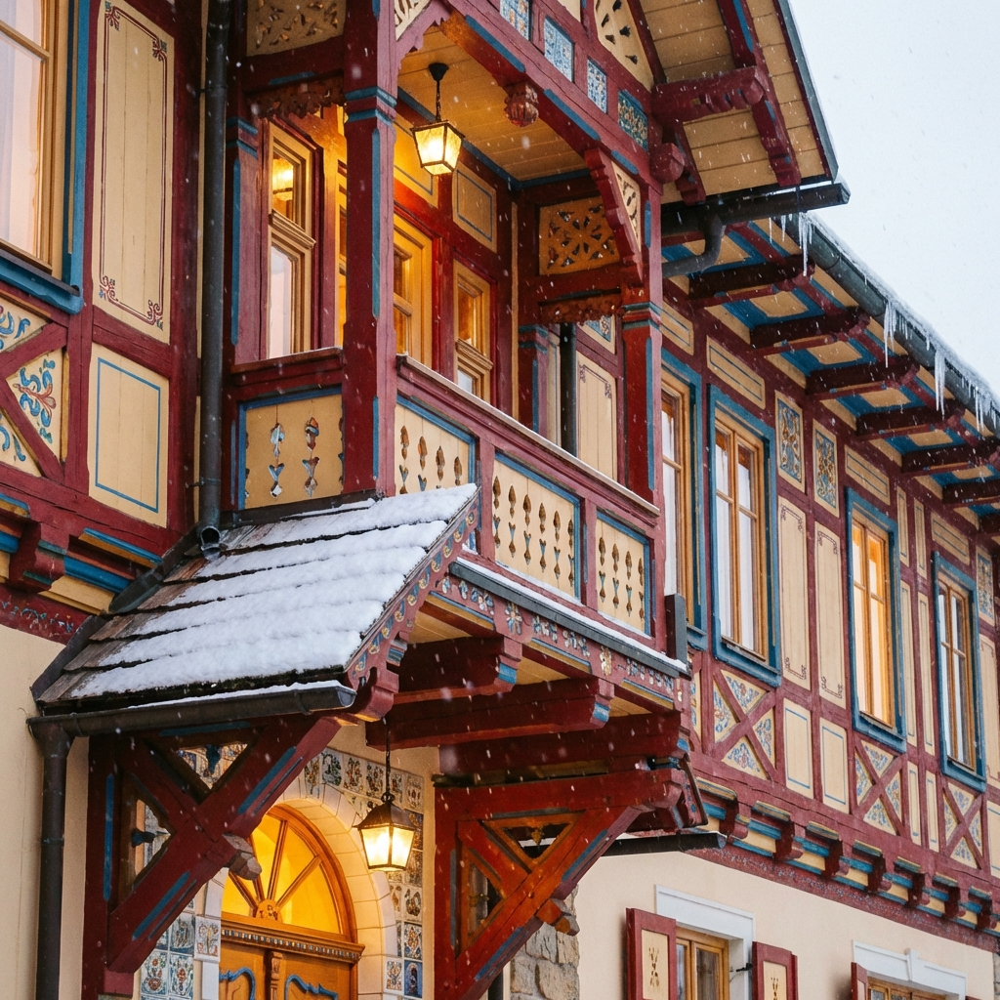
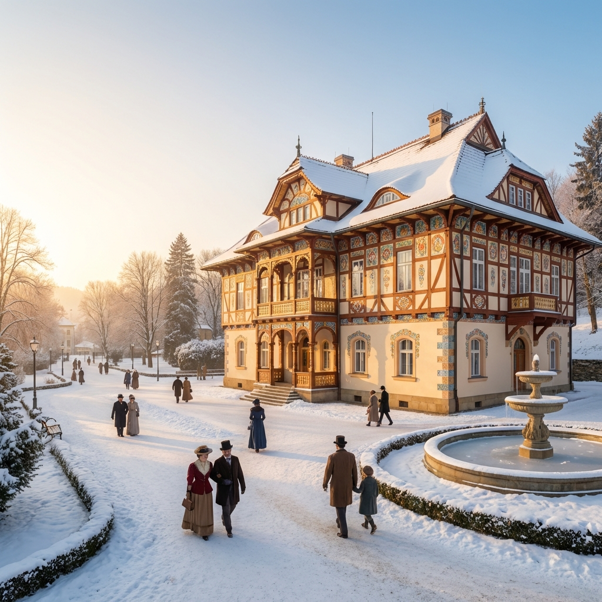

Jurkovičův dům
Bydleli jsme v perle lázeňské architektury, v Jurkovičově domě. Tento unikátní hotel, postavený v roce 1902 podle návrhu architekta Dušana Jurkoviče, je jedním z nejkrásnějších příkladů lidové secese.
Budova v sobě spojuje prvky valašské lidové architektury s anglickou secesí. Její barevnost a hravost nás okouzlila na první pohled. Původně „Janův dům“ byl přestavěn do dnešní podoby a stal se ikonou Luhačovic. Interiéry jsou citlivě zrekonstruované, takže jsme si mohli užívat moderní komfort s nádechem historie.

